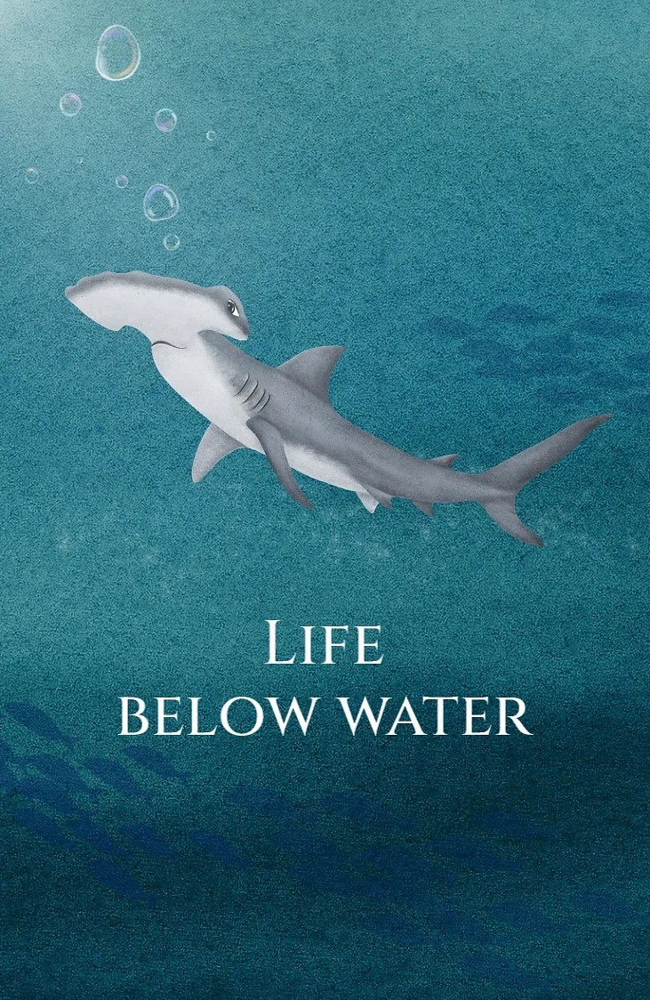
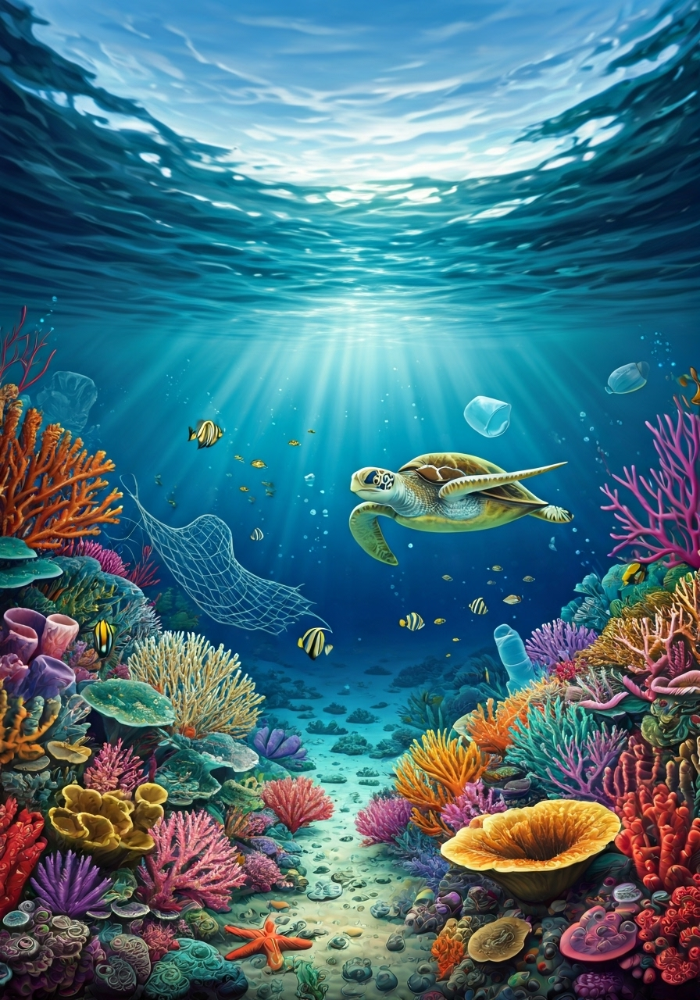
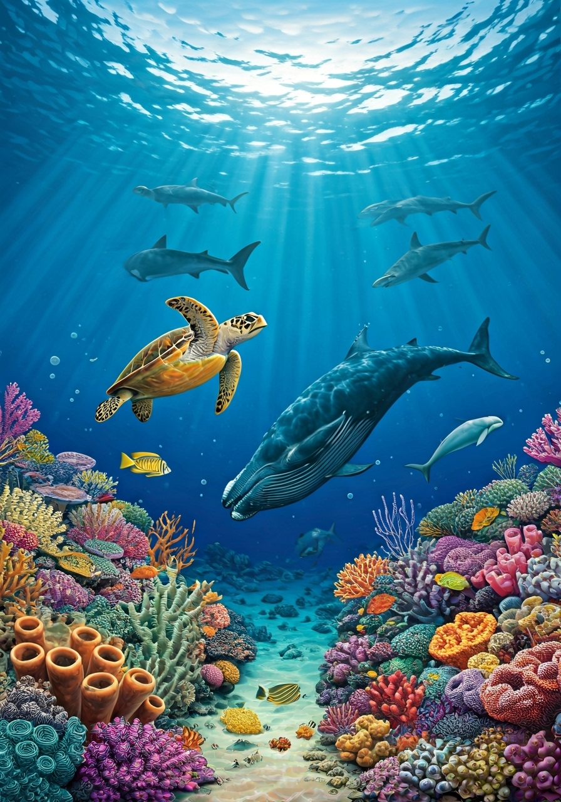
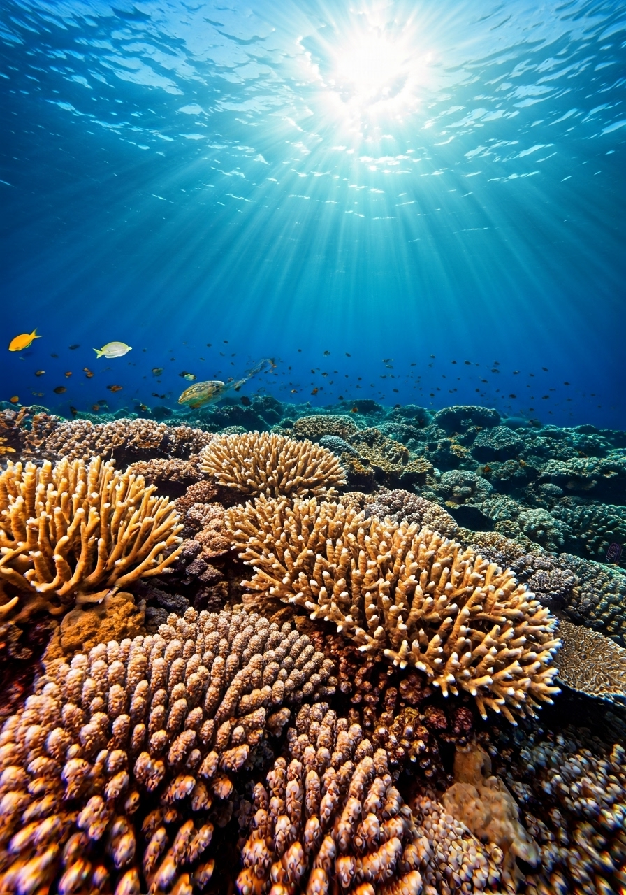
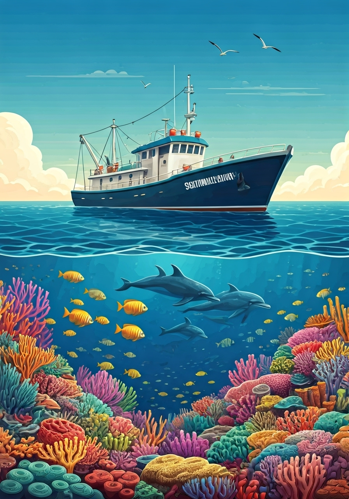

Welcome to Aquaverse
About Us
At Aquaverse, we're committed to SDG 14: Life Below Water, working to protect our oceans, marine life, and coastal communities. Through education, awareness, and sustainable practices, we aim to inspire action and promote lasting change.
By harnessing scientific research and cutting-edge technology, Aquaverse strives to foster a deeper understanding of ocean ecosystems and the threats they face. Together, we can preserve the beauty and biodiversity of our waters for generations to come.

Our Mission
We strive to create a cleaner, healthier ocean by addressing marine pollution, protecting endangered species, preserving coral ecosystems, and promoting sustainable fishing practices. Our goal is to foster global awareness and encourage individual and collective responsibility for the planet’s oceans.
We are dedicated to empowering individuals through education and advocacy, encouraging sustainable lifestyles and inspiring policy changes that prioritize ocean health. Our mission also includes supporting scientific research that informs conservation strategies and helps restore fragile marine habitats.
At Aquaverse, we believe that every action counts, from reducing plastic waste to supporting sustainable seafood choices. Through community engagement, innovative solutions, and unwavering commitment, we work tirelessly to ensure that the oceans remain vibrant and thriving ecosystems.
Contents




Sustainable Fishing
Explore eco-friendly fishing practices and ocean conservation methods.
Read More →